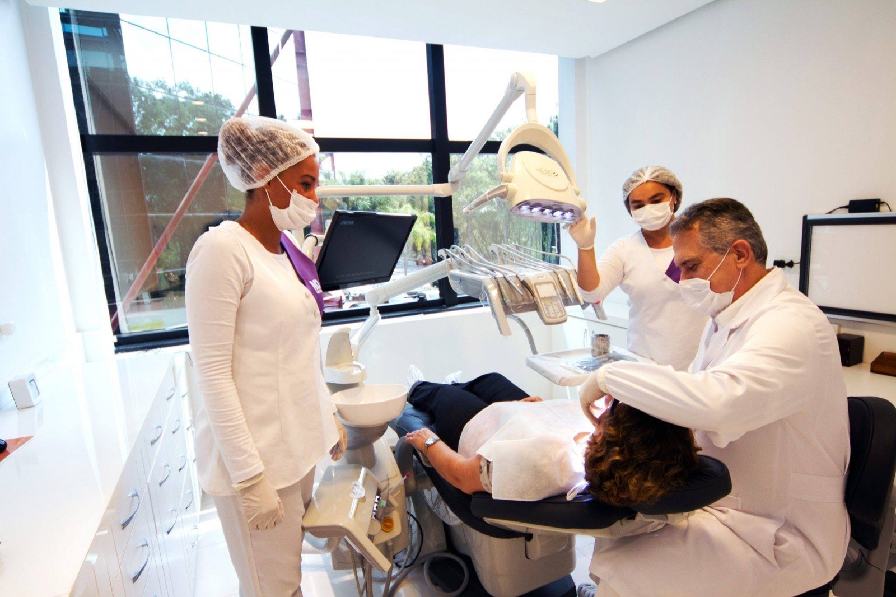

Dentistas Barra da Tijuca – Excelência em Odontologia na Sua Região
Localizada no Shopping Città América, na Av. das Américas, 700, Bloco 2, Sala 143, nossa clínica é referência em tratamentos odontológicos de alto padrão na Barra da Tijuca, Rio de Janeiro. Com mais de 38 anos de experiência, oferecemos atendimento personalizado que une tradição e inovação.

Localização Privilegiada na Barra da Tijuca
Nossa unidade na Barra foi estrategicamente escolhida para oferecer conveniência e segurança. O Shopping Città América fica próximo ao Downtown e conta com fácil acesso ao metrô e estacionamento amplo, permitindo que nossos pacientes realizem seus tratamentos com total tranquilidade.
Nossa missão é proporcionar aos pacientes mais do que sorrisos bonitos: queremos garantir saúde, confiança e bem-estar. Por isso, somos uma das clínicas mais procuradas por quem busca dentistas na Barra da Tijuca.
Equipe Especializada e Infraestrutura de Ponta
Contamos com uma equipe de especialistas capacitados para atuar em todas as áreas da odontologia:
- Implantodontia — reabilitação com implantes de titânio e próteses fixas
- Prótese Dentária — coroas, pontes e reabilitações orais completas
- Ortodontia — alinhamento dos dentes com aparelhos modernos
- Endodontia — tratamento de canal com técnicas atualizadas
- Estética Dental — facetas, lentes de contato e clareamento
- Periodontia — saúde da gengiva e prevenção de doenças periodontais
Nossa infraestrutura moderna foi projetada para oferecer conforto, segurança e tecnologia — garantindo resultados de excelência em todos os procedimentos. Na nossa clínica, cada atendimento é único, porque acreditamos que cada sorriso tem uma história especial para contar.
Missão MD Frossard
Proporcionar mais do que sorrisos bonitos: queremos garantir saúde, confiança e bem-estar através de um relacionamento próximo, ético e humanizado.
O Reconhecimento dos Pacientes
"É com muita satisfação que deixo aqui o meu depoimento de um sonho realizado. Isso aconteceu na Clínica MD Frossard Odontologia, onde fiquei sob os cuidados do Dr. Marcus Frossard e Dr. Davi Frossard. Eles me proporcionaram um sorriso mais bonito e perfeito, elevando minha autoestima, graças aos seus talentos e profissionalismo."
— Zilda Braga"Após diversas pesquisas, optei por consultar os doutores Marcus Frossard e David Frossard. Profissionais altamente qualificados que me transmitiram segurança e tranquilidade. Além disso, a estrutura física e os recursos tecnológicos da clínica são impecáveis, garantindo atendimento de excelência."
— Clau, pacienteCompromisso com Qualidade e Inovação
Durante mais de três décadas, construímos uma reputação sólida com base na ética, no atendimento humanizado e na busca contínua por inovação. Utilizamos materiais de alta qualidade e técnicas atualizadas para oferecer resultados que superam as expectativas dos nossos pacientes mais exigentes.
Agende sua Consulta
Agende sua consulta agora mesmo. Entre em contato pelo telefone (21) 3513-8479 ou mande uma mensagem via WhatsApp. O seu sorriso merece o melhor, e estamos aqui para proporcionar isso a você.